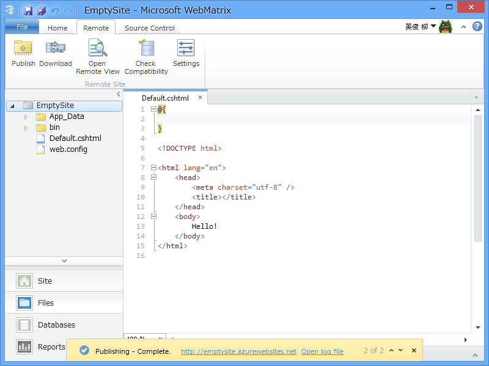
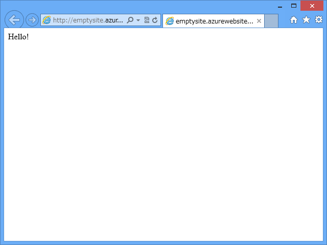

WebMatrix 3 Preview → Windows Azure Web Sites が光速過ぎて笑うしかない
公開日：

Microsoft WebMatrix 3 Preview - だるろぐ の続きというか、補足のようなもの。
Windows Azure （Microsoft ID）でログインした状態で Web サイトを新規作成すると、「Windows Azure にもサイトを作らないか？（うほっ」と言われる。

素直にそれに従うと……フツーに Windows Azure Web Sites ができちゃう。もう簡単すぎて笑うしかない……。まぁ、もともと Windows Azure は簡単だけれど。

さすがにこれだけだと空なので、Default.cshtml でもおいて公開してみる。いつも通り［Publish］ボタンを押すと、初回は互換性チェックが走って……

ファイルのアップロードをして……

完成。

あー、全部 Azure Web Sites にしてしまいたいなぁ。実はそれほど高くなさそうなのだけれど、サブドメイン使いまくってるとやっぱり ExpressWeb には勝てないわけで。
GitHub や CodePlex を使うつもりならば、そっちでプロジェクトを作成し、WebMatrix 3 でクローンするといい。おんなじ感じで Azure Web Sites も簡単に作れる。
おまけ
@ishisaka さんが Git 周りを中心に WebMatrix 3 の記事を書いてくれているので必見やで。